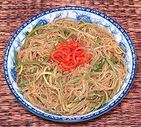

|
Bean Thread & Cucumber SaladPacific Rim - Southeast Asian style | ||||
| Serves: Effort: Sched: DoAhead: |
6 sal * 1+ hrs Best |
A very simple but refreshing and enjoyable Southeast Asian style salad for warm summer days. You can vary the chili bite to suit your taste, but it should not be too mild. It can be made at least a day ahead and refrigerated. | |||
|
5-1/4 1 3 ------ 1 3 2 1/2 1 1 ------ |
oz # --- T T T T T t --- |
Bean Threads (1) Cucumbers (2) Green Chilis (3) -- Dressing Chili Garlic (4) Black Vinegar (5) Soy Sauce Palm Sugar (6) Oil Sesame Oil, dark -- Garnish (Note-7) |
Make - (1+ hrs - 30 min work)
|
0gv_btcuke1 100622 r 200322 nf40 - www.clovegarden.com
©Andrew Grygus - agryg@aaxnet.com - Linking to and
non-commercial use of this page is permitted.